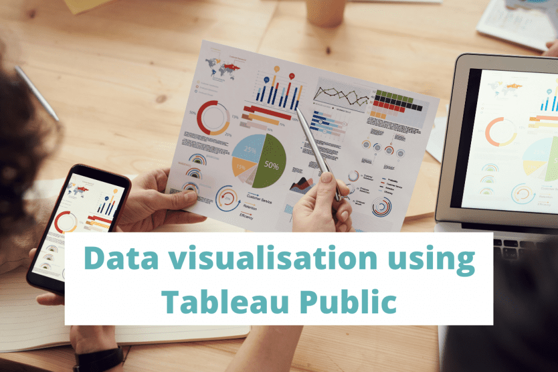
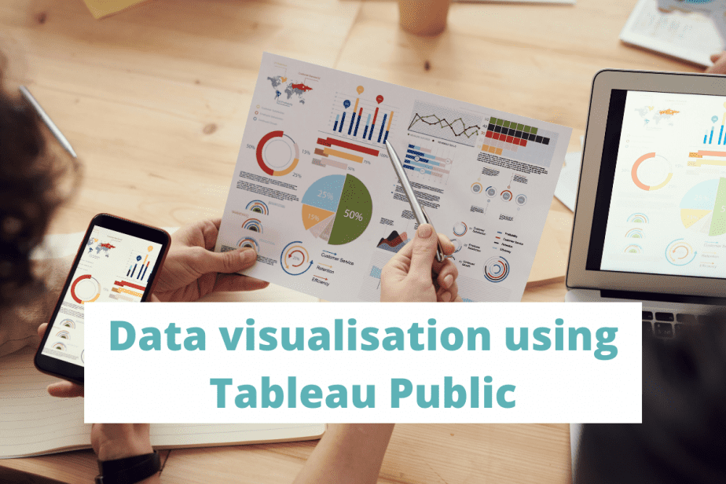

Hello! I am Manasi, a Data Enthusiast! With a Master's degree in Information Systems and over 4 years years of industry experience as a Business Intelligence Analyst and a Business Consultant, I have developed a strong foundation in data analysis, business analysis and SAP Basis consulting.
I am skilled at utilizing a diverse range of technologies and tools such as SQL, Python, R, Tableau, Power BI and SAP to extract, transform, analyze, and visualize complex data into actionable insights, thereby facilitating informed and insightful decision-making.
I am a proactive team player with excellent communication and interpersonal skills, capable of collaborating effectively with clients. I am now seeking opportunities where I can leverage my skills, knowledge and experience to drive innovation and deliver impactful results.
 

Explore a range of Tableau dashboards to delve into the art of storytelling through visually captivating graphics. Leveraging my expertise in data analysis and pattern recognition, I uncover trends and insights within the data.

This project focuses on using SQL to analyze customer data, visiting patterns, and money spent on favorite food items to identify loyal customers for Danny's Diner and help him deliver a better and more personalised dining experience.
Moreover, Danny plans to leverage these insights to evaluate the potential expansion of his existing customer loyalty program
This project utilizes Power BI to throughly to explore and analyze historical booking patterns, sales channel effectiveness, trip categorizations, and lead times to understand passenger demand.
Additionally, the analysis delved into indicators of customer preferences for baggage, seating, and in-flight meals, unveiling actionable insights to tailor services and enhance customer satisfaction.

The objective of this project is to identify replacements for lost players on the Oakland baseball team. Through the utilization of R functions and libraries, the data has been meticulously cleaned and wrangled to facilitate the search for suitable replacements.

Conducted data cleaning, exploratory data analysis, and hypothesis testing in Python using NumPy, Seaborn, Pandas, and Matplotlib libraries.

This section showcases my problem solving capabilities and a varied assortment of innovative solutions to leetcode problems.